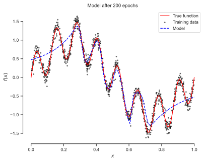
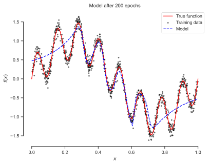

Show code cell source
import matplotlib.pyplot as plt
%matplotlib inline
import matplotlib_inline
matplotlib_inline.backend_inline.set_matplotlib_formats('svg')
import seaborn as sns
sns.set_context("paper")
sns.set_style("ticks");
!pip show equinox || echo equinox not found. Installing... && pip install equinox 2> /dev/null
Show code cell output
Name: equinox
Version: 0.11.2
Summary: Elegant easy-to-use neural networks in JAX.
Home-page:
Author:
Author-email: Patrick Kidger <contact@kidger.site>
License: Apache License
Version 2.0, January 2004
http://www.apache.org/licenses/
TERMS AND CONDITIONS FOR USE, REPRODUCTION, AND DISTRIBUTION
1. Definitions.
"License" shall mean the terms and conditions for use, reproduction,
and distribution as defined by Sections 1 through 9 of this document.
"Licensor" shall mean the copyright owner or entity authorized by
the copyright owner that is granting the License.
"Legal Entity" shall mean the union of the acting entity and all
other entities that control, are controlled by, or are under common
control with that entity. For the purposes of this definition,
"control" means (i) the power, direct or indirect, to cause the
direction or management of such entity, whether by contract or
otherwise, or (ii) ownership of fifty percent (50%) or more of the
outstanding shares, or (iii) beneficial ownership of such entity.
"You" (or "Your") shall mean an individual or Legal Entity
exercising permissions granted by this License.
"Source" form shall mean the preferred form for making modifications,
including but not limited to software source code, documentation
source, and configuration files.
"Object" form shall mean any form resulting from mechanical
transformation or translation of a Source form, including but
not limited to compiled object code, generated documentation,
and conversions to other media types.
"Work" shall mean the work of authorship, whether in Source or
Object form, made available under the License, as indicated by a
copyright notice that is included in or attached to the work
(an example is provided in the Appendix below).
"Derivative Works" shall mean any work, whether in Source or Object
form, that is based on (or derived from) the Work and for which the
editorial revisions, annotations, elaborations, or other modifications
represent, as a whole, an original work of authorship. For the purposes
of this License, Derivative Works shall not include works that remain
separable from, or merely link (or bind by name) to the interfaces of,
the Work and Derivative Works thereof.
"Contribution" shall mean any work of authorship, including
the original version of the Work and any modifications or additions
to that Work or Derivative Works thereof, that is intentionally
submitted to Licensor for inclusion in the Work by the copyright owner
or by an individual or Legal Entity authorized to submit on behalf of
the copyright owner. For the purposes of this definition, "submitted"
means any form of electronic, verbal, or written communication sent
to the Licensor or its representatives, including but not limited to
communication on electronic mailing lists, source code control systems,
and issue tracking systems that are managed by, or on behalf of, the
Licensor for the purpose of discussing and improving the Work, but
excluding communication that is conspicuously marked or otherwise
designated in writing by the copyright owner as "Not a Contribution."
"Contributor" shall mean Licensor and any individual or Legal Entity
on behalf of whom a Contribution has been received by Licensor and
subsequently incorporated within the Work.
2. Grant of Copyright License. Subject to the terms and conditions of
this License, each Contributor hereby grants to You a perpetual,
worldwide, non-exclusive, no-charge, royalty-free, irrevocable
copyright license to reproduce, prepare Derivative Works of,
publicly display, publicly perform, sublicense, and distribute the
Work and such Derivative Works in Source or Object form.
3. Grant of Patent License. Subject to the terms and conditions of
this License, each Contributor hereby grants to You a perpetual,
worldwide, non-exclusive, no-charge, royalty-free, irrevocable
(except as stated in this section) patent license to make, have made,
use, offer to sell, sell, import, and otherwise transfer the Work,
where such license applies only to those patent claims licensable
by such Contributor that are necessarily infringed by their
Contribution(s) alone or by combination of their Contribution(s)
with the Work to which such Contribution(s) was submitted. If You
institute patent litigation against any entity (including a
cross-claim or counterclaim in a lawsuit) alleging that the Work
or a Contribution incorporated within the Work constitutes direct
or contributory patent infringement, then any patent licenses
granted to You under this License for that Work shall terminate
as of the date such litigation is filed.
4. Redistribution. You may reproduce and distribute copies of the
Work or Derivative Works thereof in any medium, with or without
modifications, and in Source or Object form, provided that You
meet the following conditions:
(a) You must give any other recipients of the Work or
Derivative Works a copy of this License; and
(b) You must cause any modified files to carry prominent notices
stating that You changed the files; and
(c) You must retain, in the Source form of any Derivative Works
that You distribute, all copyright, patent, trademark, and
attribution notices from the Source form of the Work,
excluding those notices that do not pertain to any part of
the Derivative Works; and
(d) If the Work includes a "NOTICE" text file as part of its
distribution, then any Derivative Works that You distribute must
include a readable copy of the attribution notices contained
within such NOTICE file, excluding those notices that do not
pertain to any part of the Derivative Works, in at least one
of the following places: within a NOTICE text file distributed
as part of the Derivative Works; within the Source form or
documentation, if provided along with the Derivative Works; or,
within a display generated by the Derivative Works, if and
wherever such third-party notices normally appear. The contents
of the NOTICE file are for informational purposes only and
do not modify the License. You may add Your own attribution
notices within Derivative Works that You distribute, alongside
or as an addendum to the NOTICE text from the Work, provided
that such additional attribution notices cannot be construed
as modifying the License.
You may add Your own copyright statement to Your modifications and
may provide additional or different license terms and conditions
for use, reproduction, or distribution of Your modifications, or
for any such Derivative Works as a whole, provided Your use,
reproduction, and distribution of the Work otherwise complies with
the conditions stated in this License.
5. Submission of Contributions. Unless You explicitly state otherwise,
any Contribution intentionally submitted for inclusion in the Work
by You to the Licensor shall be under the terms and conditions of
this License, without any additional terms or conditions.
Notwithstanding the above, nothing herein shall supersede or modify
the terms of any separate license agreement you may have executed
with Licensor regarding such Contributions.
6. Trademarks. This License does not grant permission to use the trade
names, trademarks, service marks, or product names of the Licensor,
except as required for reasonable and customary use in describing the
origin of the Work and reproducing the content of the NOTICE file.
7. Disclaimer of Warranty. Unless required by applicable law or
agreed to in writing, Licensor provides the Work (and each
Contributor provides its Contributions) on an "AS IS" BASIS,
WITHOUT WARRANTIES OR CONDITIONS OF ANY KIND, either express or
implied, including, without limitation, any warranties or conditions
of TITLE, NON-INFRINGEMENT, MERCHANTABILITY, or FITNESS FOR A
PARTICULAR PURPOSE. You are solely responsible for determining the
appropriateness of using or redistributing the Work and assume any
risks associated with Your exercise of permissions under this License.
8. Limitation of Liability. In no event and under no legal theory,
whether in tort (including negligence), contract, or otherwise,
unless required by applicable law (such as deliberate and grossly
negligent acts) or agreed to in writing, shall any Contributor be
liable to You for damages, including any direct, indirect, special,
incidental, or consequential damages of any character arising as a
result of this License or out of the use or inability to use the
Work (including but not limited to damages for loss of goodwill,
work stoppage, computer failure or malfunction, or any and all
other commercial damages or losses), even if such Contributor
has been advised of the possibility of such damages.
9. Accepting Warranty or Additional Liability. While redistributing
the Work or Derivative Works thereof, You may choose to offer,
and charge a fee for, acceptance of support, warranty, indemnity,
or other liability obligations and/or rights consistent with this
License. However, in accepting such obligations, You may act only
on Your own behalf and on Your sole responsibility, not on behalf
of any other Contributor, and only if You agree to indemnify,
defend, and hold each Contributor harmless for any liability
incurred by, or claims asserted against, such Contributor by reason
of your accepting any such warranty or additional liability.
END OF TERMS AND CONDITIONS
APPENDIX: How to apply the Apache License to your work.
To apply the Apache License to your work, attach the following
boilerplate notice, with the fields enclosed by brackets "[]"
replaced with your own identifying information. (Don't include
the brackets!) The text should be enclosed in the appropriate
comment syntax for the file format. We also recommend that a
file or class name and description of purpose be included on the
same "printed page" as the copyright notice for easier
identification within third-party archives.
Copyright [yyyy] [name of copyright owner]
Licensed under the Apache License, Version 2.0 (the "License");
you may not use this file except in compliance with the License.
You may obtain a copy of the License at
http://www.apache.org/licenses/LICENSE-2.0
Unless required by applicable law or agreed to in writing, software
distributed under the License is distributed on an "AS IS" BASIS,
WITHOUT WARRANTIES OR CONDITIONS OF ANY KIND, either express or implied.
See the License for the specific language governing permissions and
limitations under the License.
Location: /Users/ibilion/.pyenv/versions/3.11.6/lib/python3.11/site-packages
Requires: jax, jaxtyping, typing-extensions
Required-by: diffrax, lineax, optimistix, orthojax
Requirement already satisfied: equinox in /Users/ibilion/.pyenv/versions/3.11.6/lib/python3.11/site-packages (0.11.2)
Requirement already satisfied: jax>=0.4.13 in /Users/ibilion/.pyenv/versions/3.11.6/lib/python3.11/site-packages (from equinox) (0.4.19)
Requirement already satisfied: jaxtyping>=0.2.20 in /Users/ibilion/.pyenv/versions/3.11.6/lib/python3.11/site-packages (from equinox) (0.2.25)
Requirement already satisfied: typing-extensions>=4.5.0 in /Users/ibilion/.pyenv/versions/3.11.6/lib/python3.11/site-packages (from equinox) (4.8.0)
Requirement already satisfied: ml-dtypes>=0.2.0 in /Users/ibilion/.pyenv/versions/3.11.6/lib/python3.11/site-packages (from jax>=0.4.13->equinox) (0.3.1)
Requirement already satisfied: numpy>=1.22 in /Users/ibilion/.pyenv/versions/3.11.6/lib/python3.11/site-packages (from jax>=0.4.13->equinox) (1.25.2)
Requirement already satisfied: opt-einsum in /Users/ibilion/.pyenv/versions/3.11.6/lib/python3.11/site-packages (from jax>=0.4.13->equinox) (3.3.0)
Requirement already satisfied: scipy>=1.9 in /Users/ibilion/.pyenv/versions/3.11.6/lib/python3.11/site-packages (from jax>=0.4.13->equinox) (1.11.3)
Requirement already satisfied: typeguard<3,>=2.13.3 in /Users/ibilion/.pyenv/versions/3.11.6/lib/python3.11/site-packages (from jaxtyping>=0.2.20->equinox) (2.13.3)
Spectral Bias of Neural Networks#
It has been observed, see Rahaman et al. 2019, that neural networks are biased towards the low frequency components of the input signal. This bias is known as the spectral bias of neural networks. This problem inhibits the ability to train PINNs for high frequency problems, e.g., problems exhibiting localized features like shocks, boundary layers, etc. The problem of spectral bias can be understood theoretically using the neural tangent kernel (NTK) framework. We will demonstrate this bias using a simple example. We will train a simple MLP to approximate a function with a low frequency and a high frequency component. We will check how the MLP does after each epoch. You should notice that the MLP is biased towards the low frequency component of the function. Only after a large number of epochs, the MLP starts to capture the high frequency component of the function.
Numerical Example#
The function we will use is given by
for \(x \in [0, 1]\).
Let’s visualize it and the data we will use for training the neural network.
import numpy as np
import jax.numpy as jnp
f = lambda x: jnp.sin(2.0 * jnp.pi * x) + 0.5 * jnp.sin(16.0 * jnp.pi * x)
num_train = 1_000
x_train = np.random.rand(num_train)
y_train = f(x_train) + np.random.randn(num_train) * 0.1
fig, ax = plt.subplots()
x = jnp.linspace(0, 1, 100)
ax.plot(x, f(x), 'r-', label='True function')
ax.scatter(x_train, y_train, s=4, c='black', alpha=0.5, label='Training data')
ax.set_xlabel(r"$x$")
ax.set_ylabel(r"$f(x)$")
ax.set_title(r"$f(x) = \sin(2\pi x) + 0.5 \sin(16\pi x)$")
ax.legend(loc='best', frameon=True)
sns.despine(trim=True);
The following code trains a generic neural on the data. It returns the trained model after each epoch.
Show code cell source
import equinox as eqx
import optax
def data_generator(X, y, batch_size, shuffle=True):
num_samples = X.shape[0]
indices = np.arange(num_samples)
if shuffle:
np.random.shuffle(indices)
for start_idx in range(0, num_samples, batch_size):
end_idx = min(start_idx + batch_size, num_samples)
batch_indices = indices[start_idx:end_idx]
yield X[batch_indices], y[batch_indices]
def loss(model, x, y):
y_pred = model(x).flatten()
return optax.l2_loss(y_pred, y).mean()
def train_batch(
model,
x, y,
optimizer,
n_batch=10,
n_epochs=10,
freq=1_000,
):
# This is the step of the optimizer. We **always** jit:
@eqx.filter_jit
def step(opt_state, model, xi, yi):
value, grads = eqx.filter_value_and_grad(loss)(model, xi, yi)
updates, opt_state = optimizer.update(grads, opt_state)
model = eqx.apply_updates(model, updates)
return model, opt_state, value
# The state of the optimizer
opt_state = optimizer.init(eqx.filter(model, eqx.is_inexact_array))
# The path of the model
path = []
# The path of the test loss
losses = []
for e in range(n_epochs):
for i, (xb, yb) in enumerate(data_generator(x, y, n_batch)):
model, opt_state, value = step(opt_state, model, xb[:, None], yb)
if i % freq == 0:
path.append(model)
losses.append(value)
print(f"Epoch {e}, step {i}, loss {value:.3f}, test {losses[-1]:.3f}")
return model, path, losses
Let’s also write some code to visualize the predictions of the model after each epoch.
Show code cell source
def plot(model, x_train, y_train, f_true, style='b--'):
x = jnp.linspace(0, 1, 100)[:, None]
fig, ax = plt.subplots()
ax.plot(x, f_true(x), 'r-', label='True function')
ax.scatter(x_train, y_train, s=4, c='black', alpha=0.5, label='Training data')
ax.plot(x, model(x), style, label='Model')
ax.set_xlabel(r"$x$")
ax.set_ylabel(r"$f(x)$")
ax.set_title(r"$f(x) = \sin(2\pi x) + 0.5 \sin(16\pi x)$")
ax.legend(loc='best')
sns.despine(trim=True);
return fig, ax
We will try this on a simple MLP:
import jax.random as jrandom
key = jrandom.PRNGKey(0)
subkey, key = jrandom.split(key)
width_size = 128
depth = 4
mlp = eqx.filter_vmap(
eqx.nn.MLP(1, 1, width_size, depth, jnp.tanh, key=subkey))
optimizer = optax.adam(1e-3)
model, path, losses = train_batch(
mlp, x_train, y_train, optimizer,
n_batch=32,
n_epochs=300,
freq=1_000
)
Show code cell output
Epoch 0, step 0, loss 0.340, test 0.340
Epoch 1, step 0, loss 0.115, test 0.115
Epoch 2, step 0, loss 0.105, test 0.105
Epoch 3, step 0, loss 0.108, test 0.108
Epoch 4, step 0, loss 0.069, test 0.069
Epoch 5, step 0, loss 0.083, test 0.083
Epoch 6, step 0, loss 0.080, test 0.080
Epoch 7, step 0, loss 0.098, test 0.098
Epoch 8, step 0, loss 0.080, test 0.080
Epoch 9, step 0, loss 0.065, test 0.065
Epoch 10, step 0, loss 0.065, test 0.065
Epoch 11, step 0, loss 0.078, test 0.078
Epoch 12, step 0, loss 0.075, test 0.075
Epoch 13, step 0, loss 0.057, test 0.057
Epoch 14, step 0, loss 0.077, test 0.077
Epoch 15, step 0, loss 0.067, test 0.067
Epoch 16, step 0, loss 0.106, test 0.106
Epoch 17, step 0, loss 0.078, test 0.078
Epoch 18, step 0, loss 0.061, test 0.061
Epoch 19, step 0, loss 0.072, test 0.072
Epoch 20, step 0, loss 0.058, test 0.058
Epoch 21, step 0, loss 0.049, test 0.049
Epoch 22, step 0, loss 0.065, test 0.065
Epoch 23, step 0, loss 0.064, test 0.064
Epoch 24, step 0, loss 0.079, test 0.079
Epoch 25, step 0, loss 0.089, test 0.089
Epoch 26, step 0, loss 0.072, test 0.072
Epoch 27, step 0, loss 0.092, test 0.092
Epoch 28, step 0, loss 0.071, test 0.071
Epoch 29, step 0, loss 0.082, test 0.082
Epoch 30, step 0, loss 0.051, test 0.051
Epoch 31, step 0, loss 0.077, test 0.077
Epoch 32, step 0, loss 0.084, test 0.084
Epoch 33, step 0, loss 0.081, test 0.081
Epoch 34, step 0, loss 0.064, test 0.064
Epoch 35, step 0, loss 0.101, test 0.101
Epoch 36, step 0, loss 0.068, test 0.068
Epoch 37, step 0, loss 0.073, test 0.073
Epoch 38, step 0, loss 0.141, test 0.141
Epoch 39, step 0, loss 0.080, test 0.080
Epoch 40, step 0, loss 0.095, test 0.095
Epoch 41, step 0, loss 0.070, test 0.070
Epoch 42, step 0, loss 0.092, test 0.092
Epoch 43, step 0, loss 0.048, test 0.048
Epoch 44, step 0, loss 0.075, test 0.075
Epoch 45, step 0, loss 0.059, test 0.059
Epoch 46, step 0, loss 0.083, test 0.083
Epoch 47, step 0, loss 0.064, test 0.064
Epoch 48, step 0, loss 0.062, test 0.062
Epoch 49, step 0, loss 0.054, test 0.054
Epoch 50, step 0, loss 0.067, test 0.067
Epoch 51, step 0, loss 0.080, test 0.080
Epoch 52, step 0, loss 0.090, test 0.090
Epoch 53, step 0, loss 0.074, test 0.074
Epoch 54, step 0, loss 0.064, test 0.064
Epoch 55, step 0, loss 0.076, test 0.076
Epoch 56, step 0, loss 0.042, test 0.042
Epoch 57, step 0, loss 0.069, test 0.069
Epoch 58, step 0, loss 0.079, test 0.079
Epoch 59, step 0, loss 0.089, test 0.089
Epoch 60, step 0, loss 0.059, test 0.059
Epoch 61, step 0, loss 0.059, test 0.059
Epoch 62, step 0, loss 0.055, test 0.055
Epoch 63, step 0, loss 0.063, test 0.063
Epoch 64, step 0, loss 0.067, test 0.067
Epoch 65, step 0, loss 0.055, test 0.055
Epoch 66, step 0, loss 0.068, test 0.068
Epoch 67, step 0, loss 0.101, test 0.101
Epoch 68, step 0, loss 0.084, test 0.084
Epoch 69, step 0, loss 0.070, test 0.070
Epoch 70, step 0, loss 0.068, test 0.068
Epoch 71, step 0, loss 0.069, test 0.069
Epoch 72, step 0, loss 0.077, test 0.077
Epoch 73, step 0, loss 0.064, test 0.064
Epoch 74, step 0, loss 0.061, test 0.061
Epoch 75, step 0, loss 0.063, test 0.063
Epoch 76, step 0, loss 0.060, test 0.060
Epoch 77, step 0, loss 0.076, test 0.076
Epoch 78, step 0, loss 0.071, test 0.071
Epoch 79, step 0, loss 0.068, test 0.068
Epoch 80, step 0, loss 0.096, test 0.096
Epoch 81, step 0, loss 0.074, test 0.074
Epoch 82, step 0, loss 0.075, test 0.075
Epoch 83, step 0, loss 0.065, test 0.065
Epoch 84, step 0, loss 0.059, test 0.059
Epoch 85, step 0, loss 0.068, test 0.068
Epoch 86, step 0, loss 0.054, test 0.054
Epoch 87, step 0, loss 0.069, test 0.069
Epoch 88, step 0, loss 0.073, test 0.073
Epoch 89, step 0, loss 0.056, test 0.056
Epoch 90, step 0, loss 0.059, test 0.059
Epoch 91, step 0, loss 0.070, test 0.070
Epoch 92, step 0, loss 0.081, test 0.081
Epoch 93, step 0, loss 0.059, test 0.059
Epoch 94, step 0, loss 0.087, test 0.087
Epoch 95, step 0, loss 0.100, test 0.100
Epoch 96, step 0, loss 0.078, test 0.078
Epoch 97, step 0, loss 0.073, test 0.073
Epoch 98, step 0, loss 0.058, test 0.058
Epoch 99, step 0, loss 0.056, test 0.056
Epoch 100, step 0, loss 0.070, test 0.070
Epoch 101, step 0, loss 0.064, test 0.064
Epoch 102, step 0, loss 0.075, test 0.075
Epoch 103, step 0, loss 0.073, test 0.073
Epoch 104, step 0, loss 0.082, test 0.082
Epoch 105, step 0, loss 0.067, test 0.067
Epoch 106, step 0, loss 0.063, test 0.063
Epoch 107, step 0, loss 0.090, test 0.090
Epoch 108, step 0, loss 0.082, test 0.082
Epoch 109, step 0, loss 0.087, test 0.087
Epoch 110, step 0, loss 0.083, test 0.083
Epoch 111, step 0, loss 0.064, test 0.064
Epoch 112, step 0, loss 0.056, test 0.056
Epoch 113, step 0, loss 0.062, test 0.062
Epoch 114, step 0, loss 0.092, test 0.092
Epoch 115, step 0, loss 0.072, test 0.072
Epoch 116, step 0, loss 0.074, test 0.074
Epoch 117, step 0, loss 0.065, test 0.065
Epoch 118, step 0, loss 0.082, test 0.082
Epoch 119, step 0, loss 0.079, test 0.079
Epoch 120, step 0, loss 0.055, test 0.055
Epoch 121, step 0, loss 0.065, test 0.065
Epoch 122, step 0, loss 0.081, test 0.081
Epoch 123, step 0, loss 0.071, test 0.071
Epoch 124, step 0, loss 0.058, test 0.058
Epoch 125, step 0, loss 0.073, test 0.073
Epoch 126, step 0, loss 0.086, test 0.086
Epoch 127, step 0, loss 0.057, test 0.057
Epoch 128, step 0, loss 0.052, test 0.052
Epoch 129, step 0, loss 0.072, test 0.072
Epoch 130, step 0, loss 0.083, test 0.083
Epoch 131, step 0, loss 0.080, test 0.080
Epoch 132, step 0, loss 0.055, test 0.055
Epoch 133, step 0, loss 0.061, test 0.061
Epoch 134, step 0, loss 0.066, test 0.066
Epoch 135, step 0, loss 0.057, test 0.057
Epoch 136, step 0, loss 0.060, test 0.060
Epoch 137, step 0, loss 0.064, test 0.064
Epoch 138, step 0, loss 0.058, test 0.058
Epoch 139, step 0, loss 0.061, test 0.061
Epoch 140, step 0, loss 0.064, test 0.064
Epoch 141, step 0, loss 0.042, test 0.042
Epoch 142, step 0, loss 0.043, test 0.043
Epoch 143, step 0, loss 0.049, test 0.049
Epoch 144, step 0, loss 0.055, test 0.055
Epoch 145, step 0, loss 0.041, test 0.041
Epoch 146, step 0, loss 0.063, test 0.063
Epoch 147, step 0, loss 0.069, test 0.069
Epoch 148, step 0, loss 0.076, test 0.076
Epoch 149, step 0, loss 0.054, test 0.054
Epoch 150, step 0, loss 0.043, test 0.043
Epoch 151, step 0, loss 0.053, test 0.053
Epoch 152, step 0, loss 0.040, test 0.040
Epoch 153, step 0, loss 0.061, test 0.061
Epoch 154, step 0, loss 0.087, test 0.087
Epoch 155, step 0, loss 0.058, test 0.058
Epoch 156, step 0, loss 0.057, test 0.057
Epoch 157, step 0, loss 0.039, test 0.039
Epoch 158, step 0, loss 0.046, test 0.046
Epoch 159, step 0, loss 0.046, test 0.046
Epoch 160, step 0, loss 0.057, test 0.057
Epoch 161, step 0, loss 0.047, test 0.047
Epoch 162, step 0, loss 0.027, test 0.027
Epoch 163, step 0, loss 0.035, test 0.035
Epoch 164, step 0, loss 0.045, test 0.045
Epoch 165, step 0, loss 0.060, test 0.060
Epoch 166, step 0, loss 0.030, test 0.030
Epoch 167, step 0, loss 0.029, test 0.029
Epoch 168, step 0, loss 0.028, test 0.028
Epoch 169, step 0, loss 0.050, test 0.050
Epoch 170, step 0, loss 0.049, test 0.049
Epoch 171, step 0, loss 0.054, test 0.054
Epoch 172, step 0, loss 0.062, test 0.062
Epoch 173, step 0, loss 0.075, test 0.075
Epoch 174, step 0, loss 0.026, test 0.026
Epoch 175, step 0, loss 0.039, test 0.039
Epoch 176, step 0, loss 0.034, test 0.034
Epoch 177, step 0, loss 0.050, test 0.050
Epoch 178, step 0, loss 0.051, test 0.051
Epoch 179, step 0, loss 0.053, test 0.053
Epoch 180, step 0, loss 0.044, test 0.044
Epoch 181, step 0, loss 0.033, test 0.033
Epoch 182, step 0, loss 0.048, test 0.048
Epoch 183, step 0, loss 0.082, test 0.082
Epoch 184, step 0, loss 0.050, test 0.050
Epoch 185, step 0, loss 0.033, test 0.033
Epoch 186, step 0, loss 0.031, test 0.031
Epoch 187, step 0, loss 0.051, test 0.051
Epoch 188, step 0, loss 0.035, test 0.035
Epoch 189, step 0, loss 0.069, test 0.069
Epoch 190, step 0, loss 0.046, test 0.046
Epoch 191, step 0, loss 0.038, test 0.038
Epoch 192, step 0, loss 0.022, test 0.022
Epoch 193, step 0, loss 0.044, test 0.044
Epoch 194, step 0, loss 0.031, test 0.031
Epoch 195, step 0, loss 0.026, test 0.026
Epoch 196, step 0, loss 0.066, test 0.066
Epoch 197, step 0, loss 0.031, test 0.031
Epoch 198, step 0, loss 0.034, test 0.034
Epoch 199, step 0, loss 0.050, test 0.050
Epoch 200, step 0, loss 0.045, test 0.045
Epoch 201, step 0, loss 0.040, test 0.040
Epoch 202, step 0, loss 0.040, test 0.040
Epoch 203, step 0, loss 0.057, test 0.057
Epoch 204, step 0, loss 0.029, test 0.029
Epoch 205, step 0, loss 0.045, test 0.045
Epoch 206, step 0, loss 0.065, test 0.065
Epoch 207, step 0, loss 0.048, test 0.048
Epoch 208, step 0, loss 0.029, test 0.029
Epoch 209, step 0, loss 0.045, test 0.045
Epoch 210, step 0, loss 0.039, test 0.039
Epoch 211, step 0, loss 0.044, test 0.044
Epoch 212, step 0, loss 0.040, test 0.040
Epoch 213, step 0, loss 0.063, test 0.063
Epoch 214, step 0, loss 0.049, test 0.049
Epoch 215, step 0, loss 0.053, test 0.053
Epoch 216, step 0, loss 0.039, test 0.039
Epoch 217, step 0, loss 0.042, test 0.042
Epoch 218, step 0, loss 0.045, test 0.045
Epoch 219, step 0, loss 0.029, test 0.029
Epoch 220, step 0, loss 0.054, test 0.054
Epoch 221, step 0, loss 0.032, test 0.032
Epoch 222, step 0, loss 0.036, test 0.036
Epoch 223, step 0, loss 0.032, test 0.032
Epoch 224, step 0, loss 0.040, test 0.040
Epoch 225, step 0, loss 0.041, test 0.041
Epoch 226, step 0, loss 0.031, test 0.031
Epoch 227, step 0, loss 0.018, test 0.018
Epoch 228, step 0, loss 0.022, test 0.022
Epoch 229, step 0, loss 0.032, test 0.032
Epoch 230, step 0, loss 0.039, test 0.039
Epoch 231, step 0, loss 0.034, test 0.034
Epoch 232, step 0, loss 0.029, test 0.029
Epoch 233, step 0, loss 0.052, test 0.052
Epoch 234, step 0, loss 0.044, test 0.044
Epoch 235, step 0, loss 0.035, test 0.035
Epoch 236, step 0, loss 0.043, test 0.043
Epoch 237, step 0, loss 0.044, test 0.044
Epoch 238, step 0, loss 0.025, test 0.025
Epoch 239, step 0, loss 0.036, test 0.036
Epoch 240, step 0, loss 0.029, test 0.029
Epoch 241, step 0, loss 0.031, test 0.031
Epoch 242, step 0, loss 0.036, test 0.036
Epoch 243, step 0, loss 0.042, test 0.042
Epoch 244, step 0, loss 0.042, test 0.042
Epoch 245, step 0, loss 0.030, test 0.030
Epoch 246, step 0, loss 0.045, test 0.045
Epoch 247, step 0, loss 0.048, test 0.048
Epoch 248, step 0, loss 0.031, test 0.031
Epoch 249, step 0, loss 0.042, test 0.042
Epoch 250, step 0, loss 0.031, test 0.031
Epoch 251, step 0, loss 0.036, test 0.036
Epoch 252, step 0, loss 0.033, test 0.033
Epoch 253, step 0, loss 0.049, test 0.049
Epoch 254, step 0, loss 0.042, test 0.042
Epoch 255, step 0, loss 0.044, test 0.044
Epoch 256, step 0, loss 0.031, test 0.031
Epoch 257, step 0, loss 0.043, test 0.043
Epoch 258, step 0, loss 0.034, test 0.034
Epoch 259, step 0, loss 0.027, test 0.027
Epoch 260, step 0, loss 0.016, test 0.016
Epoch 261, step 0, loss 0.030, test 0.030
Epoch 262, step 0, loss 0.022, test 0.022
Epoch 263, step 0, loss 0.040, test 0.040
Epoch 264, step 0, loss 0.024, test 0.024
Epoch 265, step 0, loss 0.048, test 0.048
Epoch 266, step 0, loss 0.037, test 0.037
Epoch 267, step 0, loss 0.025, test 0.025
Epoch 268, step 0, loss 0.025, test 0.025
Epoch 269, step 0, loss 0.034, test 0.034
Epoch 270, step 0, loss 0.026, test 0.026
Epoch 271, step 0, loss 0.021, test 0.021
Epoch 272, step 0, loss 0.025, test 0.025
Epoch 273, step 0, loss 0.017, test 0.017
Epoch 274, step 0, loss 0.018, test 0.018
Epoch 275, step 0, loss 0.016, test 0.016
Epoch 276, step 0, loss 0.011, test 0.011
Epoch 277, step 0, loss 0.019, test 0.019
Epoch 278, step 0, loss 0.016, test 0.016
Epoch 279, step 0, loss 0.016, test 0.016
Epoch 280, step 0, loss 0.011, test 0.011
Epoch 281, step 0, loss 0.021, test 0.021
Epoch 282, step 0, loss 0.019, test 0.019
Epoch 283, step 0, loss 0.010, test 0.010
Epoch 284, step 0, loss 0.012, test 0.012
Epoch 285, step 0, loss 0.012, test 0.012
Epoch 286, step 0, loss 0.013, test 0.013
Epoch 287, step 0, loss 0.016, test 0.016
Epoch 288, step 0, loss 0.021, test 0.021
Epoch 289, step 0, loss 0.020, test 0.020
Epoch 290, step 0, loss 0.018, test 0.018
Epoch 291, step 0, loss 0.021, test 0.021
Epoch 292, step 0, loss 0.015, test 0.015
Epoch 293, step 0, loss 0.011, test 0.011
Epoch 294, step 0, loss 0.008, test 0.008
Epoch 295, step 0, loss 0.011, test 0.011
Epoch 296, step 0, loss 0.012, test 0.012
Epoch 297, step 0, loss 0.005, test 0.005
Epoch 298, step 0, loss 0.009, test 0.009
Epoch 299, step 0, loss 0.010, test 0.010
Now, let’s plot the result after some of the epochs:
for e, model in enumerate(path[::50]):
fig, ax = plot(model, x_train, y_train, f)
ax.set_title(f"Model after {e * 50} epochs")
Show code cell output
 

And you clearly observe the spectral bias problem.
Random Fourier Features#
One way to mitigate the spectral bias problem is to use random Fourier features, see Tancik et al. 2020. The idea is to map the input data to a higher dimensional space using random Fourier features. The random Fourier features are designed to capture the high frequency components of the input signal. These features go right before the input layer of the neural network. Say our input data is \(\mathbf{x} \in \mathbb{R}^d\) and that we want to map to a network with \(m\)-dimensional inputs. Then, the random Fourier features are given by
where \(\mathbf{B}\) is a \(m \times d\) matrix. This matrix is constant throughout the training process. But we typically pick it randomly from a Gaussian distribution. Specifically, we pick each entry of \(\mathbf{B}\) from a Gaussian distribution with mean 0 and variance \(\sigma^2\). Wang et al. suggest picking \(\sigma\) in \([1,10]\) for PINNs applications. The cosine and sine functions are applied element-wise.
Applying Random Fourier Features to the Example#
Let’s implement random Fourier features and apply it to the previous example.
import jax
from functools import partial
import jax.tree_util as jtu
class FourierEncoding(eqx.Module):
B: jax.Array
@property
def num_fourier_features(self) -> int:
return self.B.shape[0]
@property
def in_size(self) -> int:
return self.B.shape[1]
@property
def out_size(self) -> int:
return self.B.shape[0] * 2
def __init__(self,
in_size: int,
num_fourier_features: int,
key: jax.random.PRNGKey,
sigma: float = 1.0):
self.B = jax.random.normal(
key, shape=(num_fourier_features, in_size),
dtype=jax.numpy.float32) * sigma
def __call__(self, x: jax.Array) -> jax.Array:
return jax.numpy.concatenate(
[jax.numpy.cos(jax.numpy.dot(self.B, x)),
jax.numpy.sin(jax.numpy.dot(self.B, x))],
axis=0)
And here is how we can make the network.
num_fourier_features = 100
width_size = 128
depth = 4
sigma = 5.0
key1, key2, key = jax.random.split(key, 3)
fourier = FourierEncoding(1, num_fourier_features, key1, sigma)
mlp = eqx.nn.MLP(fourier.out_size, 1, width_size, depth, jax.numpy.tanh, key=key2)
fourier_mlp = eqx.filter_vmap(eqx.nn.Sequential([eqx.nn.Lambda(fourier), eqx.nn.Lambda(mlp)]))
Recall that we want to keep \(\mathbf{B}\) constant throughout the training process.
We will have to modify our training algorithm to achieve this.
We will use equinox.partition capabilities to achieve this.
filter_spec = jtu.tree_map(lambda _: True, fourier_mlp)
filter_spec = eqx.tree_at(
lambda tree: (tree._fun[0].fn.B,),
filter_spec,
replace=(False,),
)
def train_fourier(
model,
x, y,
optimizer,
filter_spec,
n_batch=10,
n_epochs=10,
freq=1_000,
):
# A new loss is also needed
# It needs to combine the part of the model over
# which we optimize with the part where we don't
def new_loss(diff_model, static_model, x, y):
comb_model = eqx.combine(diff_model, static_model)
return loss(comb_model, x, y)
# This is the step of the optimizer. We **always** jit:
@eqx.filter_jit
def step(opt_state, model, xi, yi):
# The next two lines are also different
# First we split the model into two parts
diff_model, static_model = eqx.partition(model, filter_spec)
# Then, we call the new loss
value, grads = eqx.filter_value_and_grad(new_loss)(diff_model, static_model, xi, yi)
updates, opt_state = optimizer.update(grads, opt_state)
model = eqx.apply_updates(model, updates)
return model, opt_state, value
# The state of the optimizer
opt_state = optimizer.init(eqx.filter(model, eqx.is_inexact_array))
# The path of the model
path = []
# The path of the test loss
losses = []
for e in range(n_epochs):
for i, (xb, yb) in enumerate(data_generator(x, y, n_batch)):
model, opt_state, value = step(opt_state, model, xb[:, None], yb)
if i % freq == 0:
path.append(model)
losses.append(value)
print(f"Epoch {e}, step {i}, loss {value:.3f}, test {losses[-1]:.3f}")
return model, path, losses
Let’s train it just for 100 epochs.
optimizer = optax.adam(1e-3)
trained_v_fourier_model, fourier_path, losses = train_fourier(
fourier_mlp, x_train, y_train, optimizer,
filter_spec,
n_batch=32,
n_epochs=100,
freq=1_000
)
Show code cell output
Epoch 0, step 0, loss 0.385, test 0.385
Epoch 1, step 0, loss 0.082, test 0.082
Epoch 2, step 0, loss 0.055, test 0.055
Epoch 3, step 0, loss 0.059, test 0.059
Epoch 4, step 0, loss 0.081, test 0.081
Epoch 5, step 0, loss 0.076, test 0.076
Epoch 6, step 0, loss 0.080, test 0.080
Epoch 7, step 0, loss 0.074, test 0.074
Epoch 8, step 0, loss 0.078, test 0.078
Epoch 9, step 0, loss 0.065, test 0.065
Epoch 10, step 0, loss 0.071, test 0.071
Epoch 11, step 0, loss 0.064, test 0.064
Epoch 12, step 0, loss 0.054, test 0.054
Epoch 13, step 0, loss 0.070, test 0.070
Epoch 14, step 0, loss 0.057, test 0.057
Epoch 15, step 0, loss 0.037, test 0.037
Epoch 16, step 0, loss 0.051, test 0.051
Epoch 17, step 0, loss 0.060, test 0.060
Epoch 18, step 0, loss 0.043, test 0.043
Epoch 19, step 0, loss 0.060, test 0.060
Epoch 20, step 0, loss 0.050, test 0.050
Epoch 21, step 0, loss 0.040, test 0.040
Epoch 22, step 0, loss 0.033, test 0.033
Epoch 23, step 0, loss 0.029, test 0.029
Epoch 24, step 0, loss 0.054, test 0.054
Epoch 25, step 0, loss 0.013, test 0.013
Epoch 26, step 0, loss 0.012, test 0.012
Epoch 27, step 0, loss 0.012, test 0.012
Epoch 28, step 0, loss 0.008, test 0.008
Epoch 29, step 0, loss 0.009, test 0.009
Epoch 30, step 0, loss 0.010, test 0.010
Epoch 31, step 0, loss 0.010, test 0.010
Epoch 32, step 0, loss 0.010, test 0.010
Epoch 33, step 0, loss 0.009, test 0.009
Epoch 34, step 0, loss 0.004, test 0.004
Epoch 35, step 0, loss 0.008, test 0.008
Epoch 36, step 0, loss 0.011, test 0.011
Epoch 37, step 0, loss 0.008, test 0.008
Epoch 38, step 0, loss 0.006, test 0.006
Epoch 39, step 0, loss 0.007, test 0.007
Epoch 40, step 0, loss 0.005, test 0.005
Epoch 41, step 0, loss 0.004, test 0.004
Epoch 42, step 0, loss 0.008, test 0.008
Epoch 43, step 0, loss 0.005, test 0.005
Epoch 44, step 0, loss 0.011, test 0.011
Epoch 45, step 0, loss 0.006, test 0.006
Epoch 46, step 0, loss 0.005, test 0.005
Epoch 47, step 0, loss 0.003, test 0.003
Epoch 48, step 0, loss 0.009, test 0.009
Epoch 49, step 0, loss 0.007, test 0.007
Epoch 50, step 0, loss 0.005, test 0.005
Epoch 51, step 0, loss 0.007, test 0.007
Epoch 52, step 0, loss 0.004, test 0.004
Epoch 53, step 0, loss 0.009, test 0.009
Epoch 54, step 0, loss 0.005, test 0.005
Epoch 55, step 0, loss 0.006, test 0.006
Epoch 56, step 0, loss 0.008, test 0.008
Epoch 57, step 0, loss 0.006, test 0.006
Epoch 58, step 0, loss 0.005, test 0.005
Epoch 59, step 0, loss 0.006, test 0.006
Epoch 60, step 0, loss 0.006, test 0.006
Epoch 61, step 0, loss 0.006, test 0.006
Epoch 62, step 0, loss 0.008, test 0.008
Epoch 63, step 0, loss 0.008, test 0.008
Epoch 64, step 0, loss 0.003, test 0.003
Epoch 65, step 0, loss 0.007, test 0.007
Epoch 66, step 0, loss 0.005, test 0.005
Epoch 67, step 0, loss 0.005, test 0.005
Epoch 68, step 0, loss 0.004, test 0.004
Epoch 69, step 0, loss 0.008, test 0.008
Epoch 70, step 0, loss 0.006, test 0.006
Epoch 71, step 0, loss 0.005, test 0.005
Epoch 72, step 0, loss 0.003, test 0.003
Epoch 73, step 0, loss 0.008, test 0.008
Epoch 74, step 0, loss 0.006, test 0.006
Epoch 75, step 0, loss 0.004, test 0.004
Epoch 76, step 0, loss 0.005, test 0.005
Epoch 77, step 0, loss 0.006, test 0.006
Epoch 78, step 0, loss 0.008, test 0.008
Epoch 79, step 0, loss 0.010, test 0.010
Epoch 80, step 0, loss 0.008, test 0.008
Epoch 81, step 0, loss 0.009, test 0.009
Epoch 82, step 0, loss 0.004, test 0.004
Epoch 83, step 0, loss 0.008, test 0.008
Epoch 84, step 0, loss 0.012, test 0.012
Epoch 85, step 0, loss 0.008, test 0.008
Epoch 86, step 0, loss 0.006, test 0.006
Epoch 87, step 0, loss 0.006, test 0.006
Epoch 88, step 0, loss 0.007, test 0.007
Epoch 89, step 0, loss 0.009, test 0.009
Epoch 90, step 0, loss 0.005, test 0.005
Epoch 91, step 0, loss 0.004, test 0.004
Epoch 92, step 0, loss 0.005, test 0.005
Epoch 93, step 0, loss 0.006, test 0.006
Epoch 94, step 0, loss 0.006, test 0.006
Epoch 95, step 0, loss 0.006, test 0.006
Epoch 96, step 0, loss 0.007, test 0.007
Epoch 97, step 0, loss 0.007, test 0.007
Epoch 98, step 0, loss 0.007, test 0.007
Epoch 99, step 0, loss 0.005, test 0.005
Here are the results:
for e, model in enumerate(fourier_path[::10]):
fig, ax = plot(model, x_train, y_train, f, style='g-.')
ax.set_title(f"Model after {e * 10} epochs")

Notice that we learn the high-frequency component much faster than before. Let’s compare the two models side by side.
fig, ax = plt.subplots()
x = jnp.linspace(0, 1, 100)[:, None]
ax.plot(x, f(x), 'r-', label='True function')
ax.scatter(x_train, y_train, s=4, c='black', alpha=0.5, label='Training data')
ax.plot(x, path[99](x), 'b--', label='MLP')
ax.plot(x, fourier_path[99](x), 'g-.', label='Fourier+MLP')
ax.set_xlabel(r"$x$")
ax.set_ylabel(r"$f(x)$")
ax.set_title(r"Comparison between MLP and Fourier+MLP (100 epochs)")
plt.legend(loc='best', frameon=False);
sns.despine(trim=True);
PINNs with Random Fourier Features#
Let’s now see if we can do any better with PINNs on our steady-state heat equation example.
Show code cell source
def train_pinn(
loss,
fourier_mlp,
key,
optimizer,
filter_spec,
Lx=1.0,
Ly=1.0,
num_collocation_residual=512,
num_iter=10_000,
freq=1,
):
# this is new
def new_loss(diff_model, static_model, x, y):
comb_model = eqx.combine(diff_model, static_model)
return loss(comb_model, x, y)
@eqx.filter_jit
def step(opt_state, model, xs, ys):
# added this line
diff_model, static_model = eqx.partition(model, filter_spec)
# changed the loss to the new loss
value, grads = eqx.filter_value_and_grad(new_loss)(diff_model, static_model, xs, ys)
updates, opt_state = optimizer.update(grads, opt_state)
model = eqx.apply_updates(model, updates)
return model, opt_state, value
opt_state = optimizer.init(eqx.filter(fourier_mlp, eqx.is_inexact_array))
losses = []
for i in range(num_iter):
key1, key2, key = jrandom.split(key, 3)
xb = jrandom.uniform(key1, (num_collocation_residual,), maxval=Lx)
yb = jrandom.uniform(key2, (num_collocation_residual,), maxval=Ly)
fourier_mlp, opt_state, value = step(opt_state, fourier_mlp, xb, yb)
if i % freq == 0:
losses.append(value)
print(f"Step {i}, residual loss {value:.3e}")
return fourier_mlp, losses
Let’s build everything to train the model. Notice that we need to rescale.
from jax import grad, vmap
u0 = 500 # degrees Kelvin
k = 10.0 # thermal conductivity in W/mK
Lx = 0.1 # meters
Ly = 1.0 # meters
to_x = lambda xt: xt * Lx
to_y = lambda yt: yt * Ly
to_xt = lambda x: x / Lx
to_yt = lambda y: y / Ly
source_term = lambda x, y: 2.0 * jnp.pi ** 2 * k * u0 * (
-Lx ** 2 * jnp.sin(jnp.pi * x / Lx) ** 2 * jnp.cos(2.0 * jnp.pi * y / Ly)
-Ly ** 2 * jnp.sin(jnp.pi * y / Ly) ** 2 * jnp.cos(2.0 * jnp.pi * x / Lx)
) / (Lx ** 2 * Ly ** 2)
key1, key2, key = jax.random.split(key, 3)
num_fourier_features = 100
width_size = 128
depth = 4
model = eqx.nn.Sequential([
eqx.nn.Lambda(
FourierEncoding(2, num_fourier_features, key1, sigma=6.0)),
eqx.nn.Lambda(
eqx.nn.MLP(num_fourier_features * 2, 1, width_size, depth, jnp.tanh, key=key2)),
eqx.nn.Lambda(
lambda y: y[0])])
# remember that we need a way to filter out the parameters of the Fourier encoding
filter_spec = jtu.tree_map(lambda _: True, model)
filter_spec = eqx.tree_at(
lambda tree: (tree[0].fn.B,),
filter_spec,
replace=(False,))
# The model that satisfies the boundary conditions
u_hat = lambda x, y, model: x * (1.0 - x) * y * (1.0 - y) * model(jnp.array([x, y]))
u_x = grad(u_hat, 0)
u_y = grad(u_hat, 1)
u_xx = grad(u_x, 0)
u_yy = grad(u_y, 1)
# We need to find new scaling factors because the network structure has changed
v_u_xx = eqx.filter_jit(eqx.filter_vmap(u_xx, in_axes=(0, 0, None)))
v_u_yy = eqx.filter_jit(eqx.filter_vmap(u_yy, in_axes=(0, 0, None)))
x = jnp.linspace(0, Lx, 100)
y = jnp.linspace(0, Ly, 100)
X, Y = jnp.meshgrid(x, y)
Xt = to_xt(X)
Yt = to_yt(Y)
max_u_xx = jnp.abs(v_u_xx(Xt.flatten(), Yt.flatten(), model)).max()
max_u_yy = jnp.abs(v_u_yy(Xt.flatten(), Yt.flatten(), model)).max()
# Calculate the scale:
fs = 9.96e+06
us = fs / k / max(max_u_xx, max_u_yy) / max(1/Lx**2, 1/Ly**2)
tkx = (k * us) / (Lx ** 2 * fs)
tky = (k * us) / (Ly ** 2 * fs)
print(f"Scale factor fs: {fs:.2e}")
print(f"Scale factor us: {us:.2e}")
print(f"tkx = {tkx:.3e}, tky = {tky:.3e}")
tilde_source_term = lambda tx, ty: source_term(to_x(tx), to_y(ty)) / fs
pde_residual = vmap(
lambda x, y, model: tkx * u_xx(x, y, model) + tky * u_yy(x, y, model) + tilde_source_term(x, y),
in_axes=(0, 0, None))
pinn_loss = lambda model, x, y: jnp.mean(jnp.square(pde_residual(x, y, model)))
Scale factor fs: 9.96e+06
Scale factor us: 2.69e+04
tkx = 2.704e+00, tky = 2.704e-02
This is how we train:
key, subkey = jax.random.split(key)
optimizer = optax.adam(1e-3)
trained_model, losses = train_pinn(
pinn_loss, model, key, optimizer, filter_spec,
num_collocation_residual=256, num_iter=2_000, freq=100, Lx=1.0, Ly=1.0)
Step 0, residual loss 2.737e-01
Step 100, residual loss 1.276e-04
Step 200, residual loss 5.678e-05
Step 300, residual loss 2.237e-05
Step 400, residual loss 2.082e-05
Step 500, residual loss 1.701e-05
Step 600, residual loss 1.265e-05
Step 700, residual loss 1.450e-05
Step 800, residual loss 1.697e-05
Step 900, residual loss 3.733e-05
Step 1000, residual loss 3.822e-05
Step 1100, residual loss 5.600e-05
Step 1200, residual loss 1.472e-04
Step 1300, residual loss 2.330e-05
Step 1400, residual loss 1.878e-05
Step 1500, residual loss 5.898e-06
Step 1600, residual loss 1.264e-05
Step 1700, residual loss 8.239e-06
Step 1800, residual loss 1.354e-04
Step 1900, residual loss 1.179e-05
Save the loss for later use:
import numpy as np
np.savez("fourier_mlp_losses.npz", losses=losses)
Note
This takes 48s on my M1 MacBook Pro. It takes 13s on an A100 GPU.
Let’s compare to the case of simple MLP:
# Download the file if you are on Google Colab by uncommenting the next line
#!curl -L -O https://github.com/PredictiveScienceLab/advanced-scientific-machine-learning/raw/main/book/pinns/mlp_losses.npz
import numpy as np
mlp_losses = np.load("mlp_losses.npz")["losses"]
fig, ax = plt.subplots()
ax.plot(mlp_losses, label="MLP")
ax.plot(losses, '--', label="MLP+Fourier")
# set log scale for y axis
ax.set_yscale('log')
ax.set_xlabel("Iterations x 100")
ax.set_ylabel("Loss")
plt.legend(loc="best", frameon=False)
sns.despine(trim=True);
Here is the solution we found compared to the exact solution:
Show code cell source
x = jnp.linspace(0, Lx, 100)
y = jnp.linspace(0, Ly, 100)
X, Y = jnp.meshgrid(x, y)
u_true = u0 * jnp.sin(jnp.pi * X / Lx) ** 2 * jnp.sin(jnp.pi * Y / Ly) ** 2
v_u_hat = vmap(u_hat, in_axes=(0, 0, None))
fig, ax = plt.subplots(1,2)
u_pred = v_u_hat(Xt.flatten(), Yt.flatten(), trained_model).reshape(X.shape)
c = ax[0].contourf(X, Y, u_pred * us, cmap='viridis',
levels=jnp.linspace(-1, 510.0, 10))
fig.colorbar(c, ax=ax[0])
ax[0].set_xlabel(r'$x$')
ax[0].set_ylabel(r'$y$')
ax[0].set_title('Trained solution')
sns.despine(trim=True);
vsource_term = vmap(source_term, in_axes=(0, 0))
f = vsource_term(X.flatten(), Y.flatten()).reshape(X.shape)
c = ax[1].contourf(X, Y, u_true, cmap='viridis',
levels=jnp.linspace(-1, 510.0, 10))
fig.colorbar(c, ax=ax[1])
ax[1].set_xlabel('$x$')
ax[1].set_ylabel('$y$')
ax[1].set_title('True solution')
sns.despine(trim=True)
plt.tight_layout();
And here is the error:
Show code cell source
fig, ax = plt.subplots()
ax.set_xlabel('x')
ax.set_ylabel('y')
ax.set_title('Trained solution')
c = ax.contourf(to_xt(X), to_yt(Y), jnp.abs(u_pred * us - u_true), cmap='viridis')
plt.colorbar(c, ax=ax)
sns.despine(trim=True);